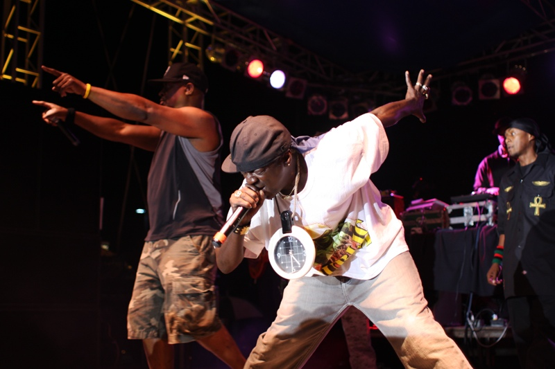

Legacies
Public Enemy made contributions to the hip-hop world with sonic experimentation as well as political and cultural consciousness, which infused itself into skilled and poetic rhymes. Public Enemy held a strong, pro-black, political stance, before the band, politically motivated hip-hop was defined by a few tracks by few artists. Public Enemy was a revolutionary hip-hop act whose entire image rested on a specified political stance. With the successes of Public Enemy, many hip-hop artists began to celebrate Afrocentric themes more. The revolutionary influence of the band is seen throughout hip-hop and is recognized in society and politics. The band "rewrote the rules of hip-hop", changing the image, sound and message forever. Pro-black lyrics brought political and social themes to hardcore hip hop, with stirring ideas of racial equality, and retribution against police brutality, aimed at disenfranchised blacks, but appealing to all the poor and underrepresented. Before Public Enemy, hip hop music was seen as "throwaway entertainment", with trite sexist and homophobic lyrics. Public Enemy brought social relevance and strength to hip hop.
Image by Mehan Jayasuriya at https://www.flickr.com/photos/mehan/
Controversies
Martin Luther King
When the 1991 Album released, a song named "By the Time I get to Arizona", featured a video depicting one of the members killing Arizona officials with a machine gun and car bombs. This was referencing the controversy of the Arizona officials cancelling the Martin Luther King holiday that year. The violent video attracted negative media attention.
Anti-Semitism
In one instance, in an interview with Public Enemy during 1989 with the Washington Times, the interviewing journalist, David Mills, lifted some quotations from a UK magazine where the band were asked on their opinions on the Arab–Israeli conflict. Their comments apparently sympathized with the Palestinians, so he was accused of anti-Semitism, "Jews are responsible for the majority of the wickedness in the world"
Thus this prompted a reaction from the band. Where Public Enemy issued the single "Welcome to the Terrordome" in 1990, which contained the lyrics: "Crucifixion ain't no fiction / So-called chosen frozen / Apologies made to whoever pleases / Still they got me like Jesus". These lyrics was seen by some in the media as anti-Semitic, as it seemed to references to the concept of "chosen people" with the lyric "so-called chosen".
Review on the Band
One time someone asked me who my favorite rap artist was. Mentally flipping through a list that included Missy Elliott and Kanye West, and not wanting to seem either too stupid or too gay, I blurted out, “Public Enemy.” After popping in a Lil Wayne remix, this person arched his eyebrows and looked down. “Public Enemy? They’re trouble.” Well, yeah, that’s the whole idea. Still recording after 20 years, the group’s call-it-like-it-is ethos remains intact, even though Chuck D has resorted to collaborating with Moby and using bad puns like “Head Wide Shut” to get his message across. As the group has grown up, so has hip-hop: While Public Enemy may have cleared the way for everyone from Eminem to M.I.A., the mix of outrage and anarchic humor that once defined their brand of political hip-hop no longer has a place in a genre that has thoroughly saturated pop culture not just stateside, but in about every other industrialized country too.
The death knell of hip-hop’s relevance came earlier this year when the Black Eyed Peas’ will.i.am released the video for his song “Yes We Can,” a humorless PSA-in-disguise for Barack Obama starring a bunch of famous people like John Legend, Common, and Scarlett Johansson. It wasn’t exactly a rap song (it wasn’t really a song at all), but it represents what rap has become. Polemics like “Fuck tha Police” and “Fight the Power” have given way to embarrassingly earnest and stilted political music with no room for antics: Eminem leading us “through the darkness” in “Mosh”; Ludacris and West shilling for Al Gore at Live Earth. These efforts take their cue from Public Enemy, but they’re self-consciously aware of their new position in the pop marketplace. Instead of battling their way from the bottom up, they are thoroughly perched at the top with all the other superstars, looking down.
So it’s hard not to approach the 20th anniversary of Public Enemy’s sophomore album and magnum opus, It Takes a Nation of Millions to Hold Us Back, with a little bit of bitterness and a lot of nostalgia. It was the first time a hip-hop album had topped The Village Voice’s Pazz & Jop poll, at a time when a major rap artist could say “Don’t believe the hype” without any hint of irony. Which isn’t to say the genre isn’t going places: After releasing her own sophomore album, Kala, the industry already wants to anoint M.I.A. the new queen of music that gives a shit. But Public Enemy and M.I.A. are very different artists who come from very different places. An artist who uses beats like weapons, M.I.A. has militant-chic appeal, but for all her record sales she’s not exactly trying to disrupt the mainstream; “Nobody wants to be dancing to political songs,” she said in an interview before the release of her debut in 2004.
In hindsight, it’s best to see Public Enemy as the first and maybe only successful hip-hop group whose music extended directly from their politics, and not the other way around. Born into activism and influenced by the now-outmoded ideas of Louis Farrakhan’s Nation of Islam, Chuck D didn’t just unsettle the middle class—he lobbed a “loud, obnoxious” bomb at it, to steal a phrase from Rolling Stone’s review of It Takes a Nation in its list of 500 Greatest Albums. Public Enemy stole from rock in more ways than sound: They adopted the bratty swagger of a punk band, filtered it through a DJ’s turntable, and wrote about what it was like to be black. The success of It Takes a Nation was, in part, a product of its own insistence; on “Bring the Noise,” the closest thing to a Chuck D manifesto, he defies the listener, black radio stations, and rock critics alike to pay attention: “Whatcha gonna do?/Rap is not afraid of you.”
Calling Public Enemy “underground” is a misnomer. Though they agitated authority, their universal beats spoke to anyone and everyone with simple honesty. It was easy, even natural, to see Do the Right Thing’s frustrated Brooklyn nobodies bumping to “Fight the Power.” Chuck D uses It Takes a Nation as a sounding board. The famously hectic, swerving beats, samples, and sirens form the backdrop to his urgent political protest: At the same time they seduce, distract, and confuse the picture, they also force you to listen to the words he’s spinning. The classic Public Enemy song (“Bring the Noise,” “Don’t Believe the Hype”) starts with a sample that forms the basis for Chuck D’s sinewy stream of consciousness. Eventually, Flavor Flav, playing comic relief, will cut in riffing on a situation or a question (“Yo, Chuck, they’re saying we’re too black, man”), Chuck will answer, and so on. It feels like a busy conversation or a raucous party, but above the white noise, there’s always Chuck D, making sense of things. If hip-hop is “CNN for black people,” as the rapper suggested, then he’s its ultimate pundit.
Like a much funnier version of Green Day’s “American Idiot,” It Takes a Nation purposefully plays on paranoia about government, cops, and the media. Chuck D talks in street codes (he likes to call people “suckers”), but his lyrics build surprisingly complex narratives out of simple observations. On “Black Steel in the Hour of Chaos,” an annoying draft letter becomes a symbol of the U.S. government’s handed-down tradition of slave-labor tactics: “I wasn’t wit’ it, but just that very minute/It occurred to me/The suckers had authority.” The static-like beats and jumbled words in “She Watch Channel Zero?!” stand in for television’s manufactured truth (the album’s intro famously says “the revolution will not be televised”), and “Night of the Living Baseheads” likens crack-cocaine use to an infectious beat. Above it all hangs Malcolm X’s quote, “Too black, too strong,” which Public Enemy plays twice and embraces as its own mantra. If the group plays to stereotype by acting like an angry mob, they also reclaim their outrage and use it to subvert wrongheaded ideas about black life.
It Takes a Nation is universally taken to be the best rap album ever made. That’s not opinion but empirical fact: Not only have Rolling Stone, NME, Vibe, and Q all said so, but it’s also the only hip-hop album that ranks in the first 100 on Rolling Stone’s Greatest Albums list. By comparison, the record peaked at a relatively low #42 on the Billboard album chart when it first came out. Because of the media sensation he created, we tend to think of Chuck D as a cultural authority, but in most obvious ways It Takes a Nation—the “greatest” hip-hop has ever produced—doesn’t fulfill the conventional expectations of its genre, which may go a long way toward explaining its unique popularity with rock critics.
The Bomb Squad’s avant-garde production made music out of a wreck of sounds. It wasn’t just the samples, from sources as varied as Queen and Stevie Wonder, but how they were used. Everyday noises like turntable scratches bumped up against live recordings of political speeches, a saxophone in “Show Em Whatcha Got,” and the rock crunch of the Beastie Boys-inspired “Party for Your Right to Fight.” Nothing if not democratic, Chuck D also didn’t self-mythologize in the same way as Notorious B.I.G. or Jay-Z. The clattering nature of Public Enemy favored more voices, not less, in the end fulfilling the hinted promise of crossover rap during the late ’80s: “Run DMC first said a deejay could be a band/Stand on its feet, get you out your seat,” Chuck D rhymes on “Bring the Noise.” He used the casual language of black culture, but he also took his own advice to “reach the bourgeois/Rock the boulevard.”
“I gotta speak the truth, man/Doing what we feel/For the music is the proof.” That’s a line from A Tribe Called Quest’s 1991 masterpiece The Low End Theory, but it might as well have been lifted from It Takes a Nation. Later groups like Quest and De La Soul, arguably responsible for the two other greatest rap albums ever made, introduced the world to jazzy, soulful hip-hop, but in their laughably titled collective Native Tongues Posse (they all came from the outskirts of Manhattan), they shared with Public Enemy a commitment to experimental sounds and authentic, outspoken visions of urban life—and from there it’s not too hard to trace the lineage of artists like M.I.A. and Common. Less positively, it’s hard to imagine a racist missive like Ice Cube’s “Black Korea”— which eerily foreshadowed the strife of the Rodney King riots—without It Takes a Nation, an album that, for better or worse, gave rap its social trenchancy. In hip-hop’s circle of life, it wasn’t so much what Public Enemy was spitting, but the boldness with which they put it out there—putting their voices on the airwaves and asking, “Can I get a witness?”